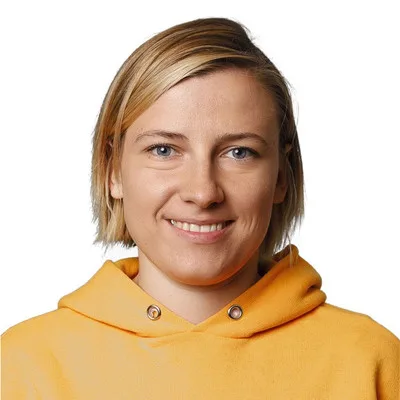
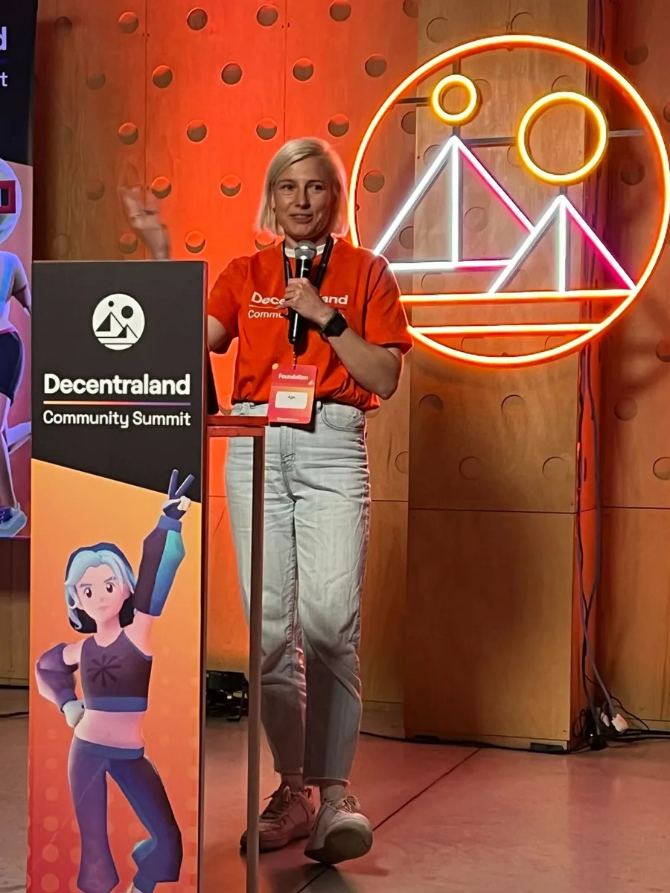

01 / LEADERSHIP
How I lead
How I grow teams and managers, and keep decisions close to the people doing the work.
I lead engineering teams and I still build. Most recently VP of Engineering at Decentraland, now building through GB Factory.

I have spent more than 15 years in game development, across PC, web, iOS, Android and VR. I have shipped games with Ubisoft, Next Games and Rovio, including South Park: Phone Destroyer, The Walking Dead: No Man's Land and Stranger Things: Puzzle Tales. At Rovio I led Angry Birds Journey from concept to soft launch.
At Decentraland I started on the original web client, then led the ground-up rebuild and production release of its Unity/C# PC client. As VP of Engineering until June 2026, my scope covered client engineering, Creator Tools, SDK and QA, with up to 25 developers in 10 countries. Before that, I grew a technology department from 25 to 50 people at Ten Square Games.
Now I build through GB Factory: Animal Park, my own mobile game; Luke, the family assistant I run at home; and client work. Most of it runs through coordinated AI task sessions, and I still decide what ships.
I am open to engineering leadership roles, advisory work and product builds.
How I grow teams and managers, and keep decisions close to the people doing the work.
Animal Park, the Unity Explorer rebuild, the Decentraland Launcher, Luke and the engineering dashboard.
Essays on prioritisation, technical direction, AI adoption and engineering leadership.
Conference panels, a product reveal on stage and two studio interviews.
